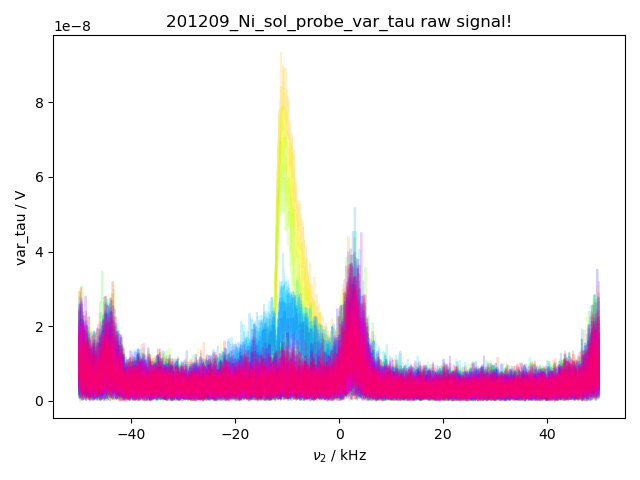
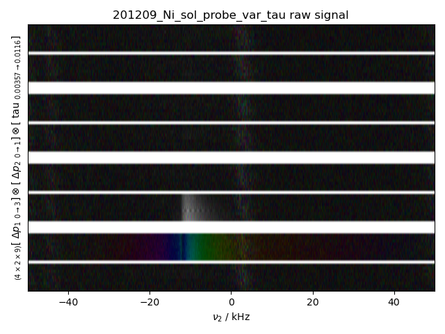
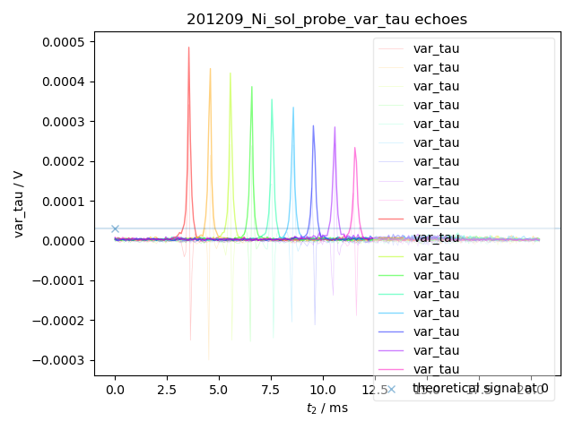

Note
Go to the end to download the full example code
Echoes with varied tau lengths¶
Processes data which has varying lengths of tau. Demonstrates how to load a h5 file.
- 
- 
- 
from pylab import *
from pyspecdata import *
from pyspecProcScripts.load_data import lookup_table
import h5py as h5
rcParams["image.aspect"] = "auto"
# sphinx_gallery_thumbnail_number = 3
with figlist_var() as fl:
for filename, expno, exp_type, postproc, frequency, f_range in [
("201209_Ni_sol_probe_var_tau",'var_tau','var_tau','spincore_var_tau_v1',
14.89e6,(-13.5e3,0))
]:
fl.basename = filename
logger.info(strm("analyzing",filename))
# {{{ JF wanted to see what dataset is called
fullname = search_filename(filename,
exp_type='var_tau',
unique=True)
with h5.File(fullname,'r') as fp:
logger.info(strm(fp.keys()))
# }}}
d = find_file(filename,exp_type=exp_type,expno=expno,postproc=postproc,
lookup=lookup_table,fl=fl)
d = d['t2':f_range]
d = d['ph1',+1]['ph2',-2]
d.ift('t2')
fl.next('echoes')
fl.plot(d.real,alpha=0.2,linewidth=0.5)
fl.plot(abs(d),alpha=0.5,linewidth=1)
NV = 250e-6*55.4*2*N_A # 400 μL, 55.4 M water molecs, 2 spins/molec
nu0 = frequency
LambdaNMR = 1.55e-4 # 1 G/√W
I = 0.5
Vsignal = LambdaNMR * NV * (gammabar_H*2*pi) * I * (I+1) * (hbar*2*pi*nu0)**2 * sqrt(50)
Vsignal /= 3 * k_B * (273+20)
axhline(y=Vsignal,alpha=0.2)
logger.info(strm("Vsignal expected",Vsignal))
fl.plot(Vsignal, 'x', label='theoretical signal at 0')
Total running time of the script: ( 0 minutes 0.886 seconds)